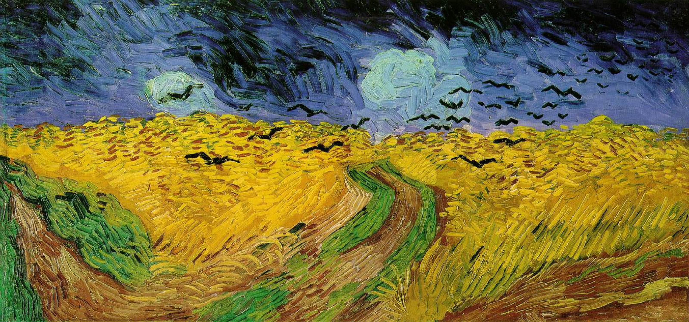

On aperçoit dès le début de cette séquence le premier passage piéton auquel le Railway Path est confronté. Cet évènement est marquant car il s’agit du premier obstacle : obligation de s’arrêter, de poser pied-à-terre, et de presser le bouton pour solliciter l’interruption de la circulation automobile. Sinon, la voie verte est la plupart du temps en site propre, isolée de la ville. À l’arrivée à l’ancienne station de Warmley, trois éléments diversifient les modes d’usage de la piste cyclable, et intensifient son intégration urbaine :
- La traversée d’un axe fort de circulation (A420) avec transports en commun coupe le chemin.
- La reconversion de l’ancienne gare en café requalifie l’usage des quais, superpose un comportement statique à l’utilisation surtout dynamique de la piste.
- La scénographie illustre l’histoire ferroviaire du lieu (mannequins, statues de voyageurs), la mise en avant du patrimoine humanise le lieu via la culture.
Ces interprétations supposent une théorie selon laquelle une diversité d’usage intensifie l’urbanité (1).
La séquence se conclut à l’approche de la voie rapide. Dimensionnées en fonction de l’envergure de la ville, les infrastructures routières sont parties intégrantes de celle-ci. Rencontrer un réseau autoroutier important démontre que l’on se situe dans un environnement urbain. En parallèle, et paradoxalement, à mesure que l’on approche ces
longues étendues de bitume, un phénomène de désertification survient. Les comportements sociaux que l’on pouvait observer précédemment (flâneries, promenades, sport, baignade), et que l’on identifiait comme des marqueurs d’urbanité ont totalement disparu. À l’écran, le temps gris, le vent qui balayent lentement les champs de céréales, le bruit irrégulier de la roue de vélo qui tourne péniblement, ainsi que le son sourd de l’autoroute sont autant d’éléments qui mettent en scène la désuétude, voire qui font l’allégorie de la mort.

Champs de blé aux corbeaux, Vincent Van Gogh
Pourtant, comme énoncé au début du paragraphe, la nature de ce lieu est intrinsèquement urbaine. Le terme désuétude est très mal choisi car l’endroit est en réalité intensément utilisé. La variété de ces usages est appauvrie par la prédominance de la fonction de réseau. (Autoroute, lignes haute tension, piste cyclable)
(1) Urbanité :
L'urbanité renvoie, dans le sens courant, à une qualité d'individus se comportant de manière polie avec autrui et dans une deuxième acception, propre à la géographie, au caractère urbain d'un espace.
Dans cette seconde acception, l'urbanité peut être définie comme procédant du « couplage de la densité et de la diversité des objets de société dans l'espace » (Lussault, 2003)